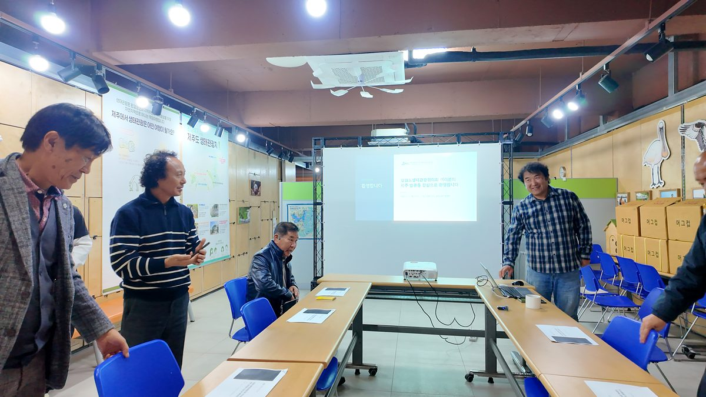
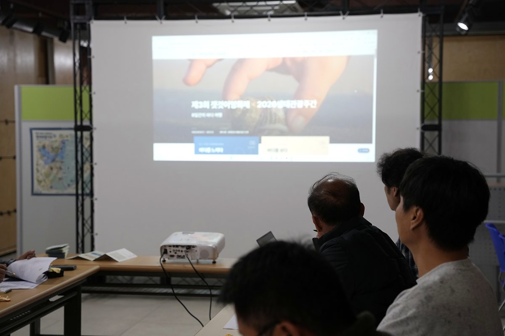
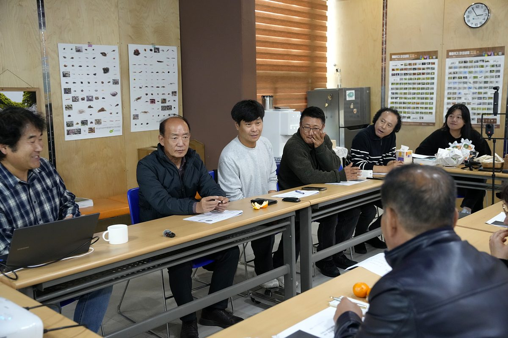
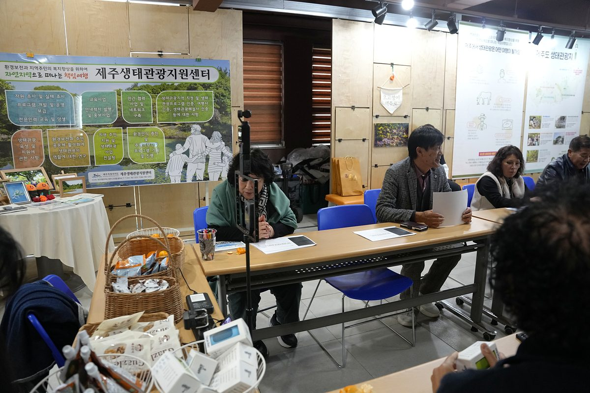
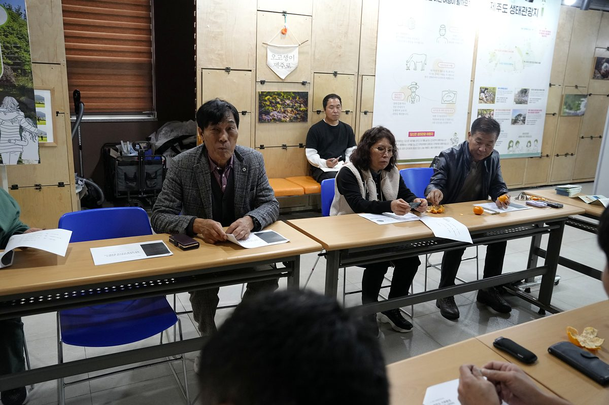
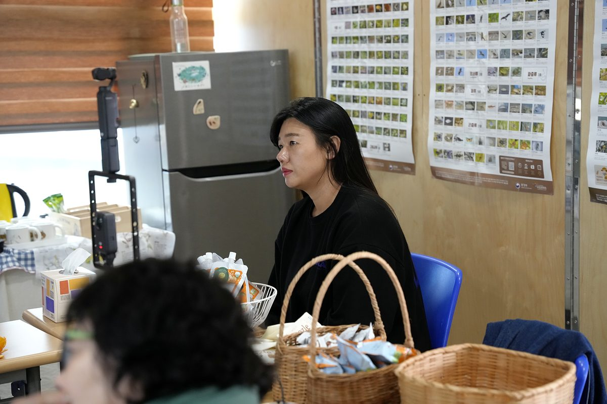
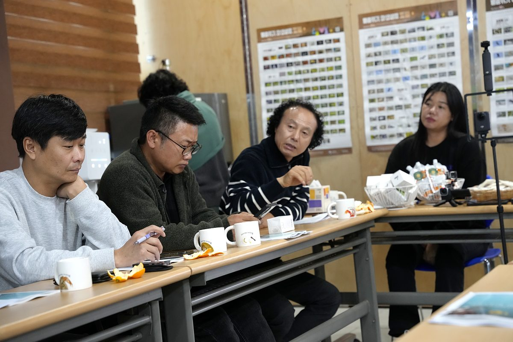
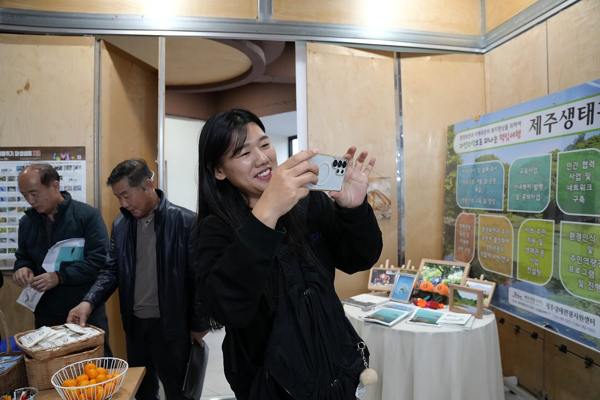

Record · 2026. 11. 17.
강원과 제주, 생태관광을 나누다
강원도생태관광협의회 제주 방문 간담회
강원의 생태관광지역 협의회 관계자들이 광역 생태관광 지원센터 선진지 견학으로 제주생태관광지원센터를 찾았습니다. 제주의 생태관광 정책과 센터 운영을 소개하고, 두 지역의 지원 체계와 마을 운영 경험, 앞으로 함께할 일을 이야기했습니다.

개요
| 일시 | 2026년 11월 17일(화) 14:30 |
|---|---|
| 장소 | 제주생태관광지원센터 (제주시 조천읍 조함해안로 19) |
| 방문 | 강원도생태관광협의회 — 강원특별자치도 내 생태관광지역 협의회 회장, 사무국장 등 |
| 참석 | 방문단 9명 — 강원도생태관광협의회, 평창·양구 지역 생태관광협의회, 인제 활성화 사업단, 한국생태관광협회 등 |
| 성격 | 광역 생태관광 지원센터 선진지 견학에 따른 기관 방문과 간담회 |
| 발표 | 「제주 생태관광 정책과 생태관광지원센터 운영」 — 임형묵 제주특별자치도 생태관광지원센터장 |
강원도생태관광협의회는 제주의 생태관광 육성 정책과 광역 지원체계, 주민 주도형 생태관광 운영 사례를 나누고 지역 간 협력 방안을 찾고자 이번 견학을 마련했습니다. 센터는 정책과 주요 사업을 소개하고 간담회를 진행했습니다.
간담회에서 나눈 이야기
센터 발표에 이어 두 지역이 서로 묻고 답하며 아래 안건을 이야기했습니다. 안건을 누르면 자세한 내용이 열립니다.
한눈에 보기
01인사와 참석 지역 소개
센터장 인사 뒤 참석자들이 돌아가며 자기 지역과 기관을 소개했습니다.
- 강원에서는 평창·양구 등 생태관광지역 협의회와 관련 기관 관계자들이 함께했습니다.
- 지난 10월 제주 생태관광 특화 프로그램 시범운영 때 양구·동해에서 온 강원 평가단이 제주를 다녀간 인연이 이번 방문으로 이어졌습니다.
02제주 센터의 운영 구조와 생태관광지역과의 관계
제주 센터는 도가 (사)제주생태관광협회에 위탁해 운영합니다. 생태관광지역 5곳을 지원하지만 관리 권한은 없습니다.
- 센터 직원은 협회 소속으로 센터 업무를 맡습니다. 또 다른 광역 센터인 전북은 한국생태관광협회 지부 형태로 운영되어 구조가 다릅니다.
- 강원 측이 센터가 생태관광지역을 어떻게 돕는지 묻자, 센터 사업은 모두 지원 사업이지만 각 지역의 운영·방문객·매출을 확인할 권한은 없다고 답했습니다. 생태관광지역 운영비는 정부에서 지역으로 따로 지원됩니다.
- 자율적으로 기획할 수 있는 것은 장점이고, 작은 예산과 마을과의 쌍방향 소통 부족은 어려움으로 꼽았습니다.
- 제주의 생태 관련 행정은 곶자왈·오름·숲·습지 같은 육상 자원 중심이어서, 바다 관련 사업은 해양보호구역 공모사업으로 따로 하고 있습니다.
03생태관광주간과 센터 사업을 꾸리는 방식
센터가 마을에 직접 돈을 지출할 근거가 없어, 생태관광주간은 외부 운영 계약을 거쳐 프로그램 운영자를 지원합니다.
- 참가자가 적은 프로그램도 유지되도록 운영자에게 일정 비용을 지원해 왔지만, 지원을 계속해도 참가자가 없는 프로그램이 있어 형평성을 고려해 내년에 방식을 고쳐 볼 계획입니다.
- 가을 생태관광주간이 중심이고, 지난해부터 여름 프로그램을 따로 운영합니다.
- 전문인력 양성교육은 매년 대상 마을이나 사람을 정해 진행하며, 올해는 마을의 요청으로 수산2리에서 했습니다.
- 예산이 작아 사운드스케이프 학술대회처럼 여러 기관이 조금씩 비용을 모아 큰 행사를 만들고, 위탁사업 외에 공모사업으로 사업 폭을 넓히고 있다고 설명했습니다.
04어린이·가족이 함께하는 프로그램
생태관광 참가자는 주로 중장년층이었지만, 새·곤충·바다생물처럼 동물을 다루는 프로그램에는 어린이와 가족 참여가 많았습니다.
- 아이 한 명이 오면 부모가 함께 와 참여 인원이 크게 늘고, 생태가 결국 미래세대를 위한 것인 만큼 내년에는 이런 프로그램에 더 힘을 실을 생각이라고 했습니다.
- 최근 비 속에서 치른 오조리 탐조대회를 사례로 소개했습니다.
05새 생태관광지역 지정 준비와 마을 운영 주체
수산2리가 생태관광지역 심사를 마쳐, 지정되면 제주의 생태관광지역은 6곳이 됩니다. 센터는 작은 마을이 계속 운영하려면 당분간 함께 키워 가는 기간이 필요하다고 보고 있습니다.
- 지정 신청은 마을이 먼저 원해서 시작했고, 센터는 해설사 양성교육과 신청 준비를 도왔습니다. 공고를 늦게 알아 짧은 기간에 준비했지만, 마을이 미리 지도와 자료 조사 등 기초를 갖춰 두어 신청할 수 있었습니다.
- 마을 사업은 이장이 누구냐에 따라 크게 달라지는 점이 두 지역 모두의 고민이었습니다.
- 그래서 수산2리는 협동조합이 운영을 맡도록 준비하고 있습니다. 선흘1리 동백동산은 마을 협동조합이 운영해 이장이 바뀌어도 꾸준히 이어지는 사례로 소개되었습니다.
06강원의 생태관광 지원 현황과 과제
강원 측은 협의회가 2024년부터 생태관광지역을 지원해 온 과정과 성과, 그리고 예산과 지원 체계의 과제를 소개했습니다.
- 5개 지역으로 시작해 2024·2025년 두 지역이 국가 생태관광지역으로 지정되었고, 새로 준비하는 지역에 주민 컨설팅과 지자체 협력, 다른 지역 사례 공유를 지원하고 있습니다.
- 보조사업의 자부담이 부담이 되어, 제주처럼 도가 전액 지원하는 체계로 바꾸고 그 위에 공모사업을 더하는 구조가 필요하다는 의견이 나왔습니다.
- 도 차원에서 생태관광 육성센터를 두고 시군별로 지역을 키우는 전북 사례도 함께 이야기했습니다.
07무엇이 생태관광인가 — 레저와의 경계
스쿠버다이빙은 생태관광 프로그램으로 운영했는데 골프는 그렇게 보지 않는 이유를 함께 짚었습니다.
- 다이버는 바닷속 생태가 잘 지켜지기를 바라지만 골프는 잔디 관리에 머문다는 점, 즉 참여자가 자연이 지켜지기를 바라게 되는지가 차이라는 의견이 나왔습니다.
- 자연 자원을 쓰는지, 배우는 것이 있는지도 기준으로 이야기했습니다.
- 레저와 생태 학습을 잇고, 평창의 박쥐 이야기처럼 깊이 있는 주제로 마니아층을 위한 특화 프로그램을 만들 필요가 있다는 의견이 나왔습니다.
08꾸준히 운영되는 제주 프로그램 사례
강원 측이 잘 되는 프로그램과 그 이유를 묻자, 센터는 몇 가지 사례를 들었습니다.
- 동백동산: 생태관광주간 밖에서도 도내 학교·유치원과 육지의 단체·수학여행 신청이 꾸준한 숲과 습지 해설 프로그램입니다.
- 다크투어: 제주 4·3을 다룬 소설 속 장소를 따라 해설하는 프로그램을 운영했습니다.
- 사운드워킹: 화순곶자왈에서 소리를 듣는 프로그램이 기업으로 자리 잡은 사례입니다. 마을 주민에게 먼저 시연해 공감을 얻은 뒤 비어 있던 마을 공간을 전시·교육 공간으로 쓰게 되었습니다.
- 곤충 프로그램: 주말이면 자리가 거의 차는 곤충 체험 업체도 있다고 소개했습니다. 강원 측은 소리 프로그램을 해 보니 아이와 젊은 층의 반응이 더 좋았다는 경험을 나눴습니다.
09생태관광지역 제도의 빈틈
강원 측이 전국 생태관광지역 제도를 다루며 본 문제들을 나눴습니다.
- 보호지역 핵심 구역 안에서는 프로그램을 거의 할 수 없어 운영에 한계가 있습니다. 수산2리의 동굴도 허가를 받아야 들어갈 수 있어 박쥐를 주제로 한 프로그램을 궁리하고 있습니다.
- 초기에 지정된 생태관광지역 가운데에는 면적이 정해지지 않은 곳이 있어 지금 자료를 다시 정리하고 있습니다.
- 육지는 대체로 한 시군에 협의체 하나인데 제주는 한 시에 여러 곳이 있어, 제도에 정해진 기준이 없다는 점도 이야기했습니다.
- DMZ처럼 마을 단위로 협의체를 꾸리기 어려운 지역, 운영이 멈춘 지역의 지정 유지 문제 등도 함께 나왔습니다.
10앞으로 함께할 일
이번 만남을 강원과 제주가 함께 활동하는 첫걸음으로 삼고, 내년에 연계할 수 있는 일을 서로 의논하기로 했습니다.
- 평창 등 강원 지역과 제주를 잇는 교류, 어린이 대상 생태학교 같은 프로그램을 함께 해 볼 수 있다는 의견이 나왔습니다.
- 센터는 상호 평가단 교류, 주민 해설사 교류 답사, 제주·강원·전북 운영 모델 비교와 정례 교류, 생태관광주간 등 행사 상호 홍보를 제안했습니다.
후속 과제와 연락
- 내년 연계 아이디어강원과 함께할 수 있는 사업을 두 지역이 각각 의논해 나누기로 했습니다.
- 상호 교류신규 프로그램 시범운영 평가단 교류, 주민 해설사 교류 답사, 행사 상호 홍보를 이어 갑니다.
- 전북 방문11월 26~27일 전북생태관광육성지원센터 방문 때 관련 공문은 전북으로 직접 보내기로 했습니다.
- 한국생태관광협회 협의협회와 협의할 일은 협회 담당 팀장을 연락 창구로 하기로 했습니다.
진행
- 맞이와 인사 — 센터 회의실
- 참석자 소개
- 센터 발표 — 제주 생태관광 정책과 생태관광지원센터 운영
- 간담회 — 안건별 질의와 의견 나누기
- 단체 사진과 센터 전시 둘러보기
사진
사진을 누르면 크게 보이고, '원본'을 누르면 내려받습니다. 공개를 원하지 않는 사진은 문의로 알려 주세요.




















출처
- 사진: 현장 촬영
- 내용: 간담회 현장 기록, 제주특별자치도 생태관광지원센터 발표 자료 「제주 생태관광 정책과 생태관광지원센터 운영」(2026. 11. 17.), 강원도생태관광협의회 기관 방문 협조 요청(2026. 11. 16.)